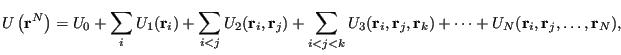
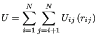
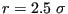
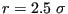

Next: Trial Moves Up: Elements of a Continuous-Space Previous: Data Representation and Input/Output
The total system potential energy is most often computed by means of analytical potentials. Such a potential energy can be written as a continuous function of the positions of particle centers-of-mass. (Such potentials are often termed “empirical” when applied to atomic systems because they formally neglect quantum mechanics.) In most molecular simulations, the total system potential can be decomposed in the following way:
|  | (86) |
Analytical potentials are most easily understood by considering model systems which are decomposable into spherically-symmetric, pairwise interactions. Consider then the following total system potential energy:
|  | (87) |
The simplest pair potential is the “hard-sphere”:
The most celebrated pair potential is the Lennard-Jones potential (Fig. 5):
We will encounter more complex potentials than Lennard-Jones, but it serves as a useful tool for introductory molecular simulation.
Reduced Units. Because the Lennard-Jones potential is so
prevalent in molecular simulations, it is essential that we understand
the unit system most often chosen for simulations using this
potential. For computational simplicity, energy in a Lennard-Jones
system is measured in units of  and length in
and length in  .
This means that everywhere in the code you would expect to see
.
This means that everywhere in the code you would expect to see
 or
or  , you find a 1 (often implied).
, you find a 1 (often implied).
Now, to compute the total potential  for a system of
particles, the simplest algorithm is to loop over all unique
pairs of particles. Here is a simple pair search C function
(the so-called
for a system of
particles, the simplest algorithm is to loop over all unique
pairs of particles. Here is a simple pair search C function
(the so-called  algorithm because its complexity scales like
algorithm because its complexity scales like
 ) to compute the total energy of a system of Lennard-Jones
particles, in reduced units:
) to compute the total energy of a system of Lennard-Jones
particles, in reduced units:
double total_e ( double * rx, double * ry, double * rz, int n ) {
int i,j;
double dx, dy, dz, r2, r6, r12;
double e = 0.0;
for (i=0;i<(n-1);i++) {
for (j=i+1;j<n;j++) {
dx = rx[i]-rx[j];
dy = ry[i]-ry[j];
dz = rz[i]-rz[j];
r2 = dx*dx + dy*dy + dz*dz;
r6 = r2*r2*r2;
r12 = r6*r6;
e += 4*(1.0/r12 - 1.0/r6);
}
}
return e;
}
Although it is strictly correct, the  pair search algorithm is
inefficient if there is a finite interaction range in the pair
potential. Typically in dense liquid simulations, a Lennard-Jones
pair potential is truncated at
. There are some
potentials that are cut off at even shorter distances. The point is
that, when the maximum interaction distance is finite, each particle
has a finite maximum number of interaction partners. (This assumes
number density is bounded, which is a reasonable assumption.) More
advanced techniques (which we discuss later) can be invoked to make
the pair search much more efficient in this case. The two most common
are (1) the Verlet list, and (2) the link-cell list. For now, and to
keep the presentation simple, we will stick to the inefficient,
brute-force
pair search algorithm is
inefficient if there is a finite interaction range in the pair
potential. Typically in dense liquid simulations, a Lennard-Jones
pair potential is truncated at
. There are some
potentials that are cut off at even shorter distances. The point is
that, when the maximum interaction distance is finite, each particle
has a finite maximum number of interaction partners. (This assumes
number density is bounded, which is a reasonable assumption.) More
advanced techniques (which we discuss later) can be invoked to make
the pair search much more efficient in this case. The two most common
are (1) the Verlet list, and (2) the link-cell list. For now, and to
keep the presentation simple, we will stick to the inefficient,
brute-force  algorithm.
algorithm.
cfa22@drexel.edu